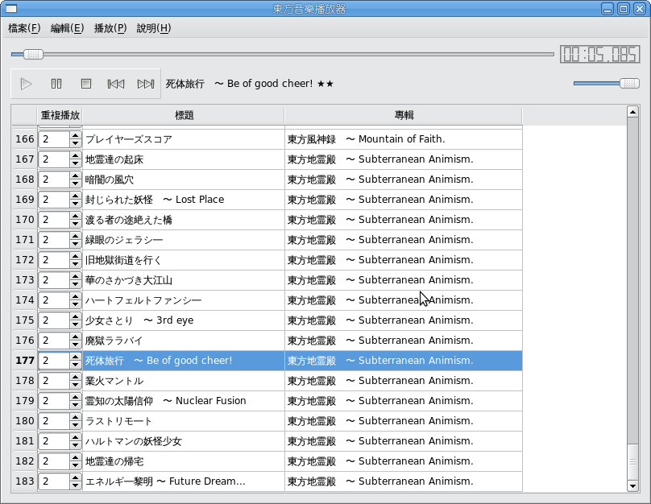

開啟後在[編輯]→[設定]內設定各程式的安裝資料夾，然後[檔案]→[載入資料檔]，就可以開始播放音樂了。

在windows上執行程式時，若出現
無法啟動這個應用程式，因為應用程式的設定不正確。重新安裝應用程式應該可以修復這個問題。時，請安裝Microsoft Visual C++ 2008 可轉散發套件 (x86)
touhou-musicplayer-0.7.0-win.7z
touhou-musicplayer-0.7.0-src.7z
touhou-musicplayer-0.6.0-win.7z
touhou-musicplayer-0.6.0-src.7z
touhou-musicplayer-0.5.0-win.7z
touhou-musicplayer-0.5.0-src.7z
touhou-musicplayer-0.4.0-win.7z
touhou-musicplayer-0.4.0-src.7z